现在让我们把注意力转到一个较复杂的例子上来，因为这里材料的不同部分受到不同量值的应力作用。试考虑一根被扭转的棒，诸如某种机械的驱动轴或在一部精密仪器中用来作为悬丝的被扭转的石英纤维。正如你可能从扭摆实验中所知道的，作用于扭转的棒上的转矩 与角度 成正比——该比例常数显然取决于棒的长度、棒的半径以及材料的性质。问题是：按怎样的方式？我们目前能够回答这个问题，因为那不过是演算某个几何问题。
图38-9（a）表示一根长度为L、半径为a、其一端相对于另一端扭过一个角度ϕ的柱形棒。如果要把这应变同我们已知道的东西联系起来，则可以把棒设想为由许多个柱形壳所构成，并分别算出每个壳所发生的情况。作为开始，我们考察一个薄而短的、半径为r（小于a）而厚度为Δr的柱形壳——如图38-9（b）所示。现在，如果考察这个柱壳上原本是一个小正方形的部分，则会看到它已被扭转成一个平行四边形。圆柱壳的每个这样的单元都处在剪切之中，而其剪切角为
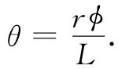
因此，材料中的剪切应力g［根据式（38.13）］为
图38-9 （a）一根扭转的柱形棒；（b）一个扭转的柱形壳；（c）壳中每一小部分都处在剪切中
剪切应力为作用于正方体端面上的力ΔF除以其端面积ΔlΔr［参见图38-9（c）］，
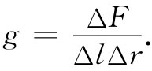
作用于这样一个正方体端面上的力ΔF贡献出绕柱轴的转矩Δτ：
Δτ=rΔF=rgΔlΔr. （38.22）
总转矩τ就是绕该柱壳整圆周的这种转矩之和。所以把足够多的部分拼在一起使得所有Δl相加成2πr，我们就得到一个空心管 的总转矩为
rg（2πr）Δr. （38.23）
或者，利用式（38.21），得
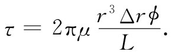 （38.24）
我们得到一根空心管的转动刚度τ/ϕ是与该管半径r的立方和厚度Δr成正比而与其长度L成反比的。
现在可以想象一根实心棒是由一系列同心管所构成的，而每个管子都被扭转相同的角度ϕ（虽然对于每个管子来说内应力 是不同的），总转矩是转动每一个柱壳所需的转矩之和，因此对于实心 棒
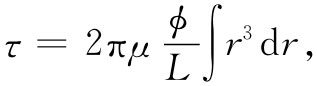
其中积分是从r=0积至r=a的，a为该棒的半径。经过积分后，得
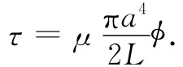 （38.25）
对于一根被扭转的棒，转矩正比于角度并且与其直径的四次幂 都成正比——一根两倍那么粗的棒产生16倍那么大的扭转刚度。
在放下扭转这一课题之前，让我们把刚才所学到的东西应用到一个有趣的问题：即扭转波。如果你取一根长棒并突然扭转其一端，则一个扭转波将会沿该棒发展下去，如图38-10（a）所简略表示出来的那样。这比一个稳恒扭转更令人精神振奋——让我们看看是否能算出所发生的情况。
图38-10 （a）在一根棒上行进的扭转波；（b）棒的一个体积元 [1]
令z为沿棒从一端至某一点的距离。对于一个静扭转来说沿棒各处都有相同的转矩，并且正比于ϕ/L，即总扭转角除以总长度。对材料要紧的是局部扭转应变，你会知道它就是∂ϕ/∂z，当沿棒的扭转不均匀时，则应该用下式来代替式（38.25）：
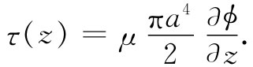 （38.26）
现在让我们来看看如放大图38-10（b）所示的、长度为Δz的体积元所发生的情况。设在一小段棒的端1处有转矩τ（z），而在端2处有一不同的转矩τ（z+Δz），如果Δz足够小，则可采用泰勒级数把它展开并写成
作用于 z与z+Δz间那一小段棒上的净转矩显然等于τ（z）与τ（z+Δz）之差，即Δτ=（∂τ/∂z）Δz。对式（38.26）取微分，得
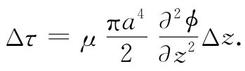 （38.28）
这个净转矩的效果是对该小段棒提供一个角加速度。这小段棒的质量为
ΔM=（πa2 Δz）ρ，
式中ρ为材料密度。我们曾经在第1卷第19章中算出一圆柱体的转动惯量为mr2 /2，若把上述那小段材料的转动惯量叫作ΔI，则有
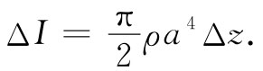 （38.29）
牛顿定律讲：转矩等于转动惯量乘以角加速度，即
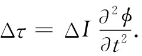 （38.30）
把每个公式集合起来，我们得
你会认识到这是一个一维的波动方程。我们已求得扭转波将以下述速率沿棒传播下去：
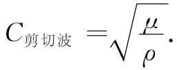 （38.32）
棒越致密 ——对于相同的刚度来说——波行得越慢 ；而棒越坚硬 ，则波发展下去就越快 。这速率与棒的直径无 关。
扭转波是剪切波 的一个特例。一般说来，剪切波是其中应变不会改变材料任何部分体积 的那种波。在扭转波中，存在这种切应力的一个特殊分布——即分布于一个圆周上。但对于切应力的任一种安排，波将以相同速率——即由式（38.32）所给出的那一速率——传播。例如，地震学家发现了在地球内部传播的这种波。
在一固体材料内部，我们还可以有另一种弹性领域中的波。如果你推动某一件东西，就可以引起“纵”波——也称为“压缩”波，这有如空气或水中的声波——位移与波的传播沿同一方向（在一弹性体的表面上也还可以有其他类型的波——叫“瑞利波”或“乐甫波”。在其中应变既不是纯纵向的也不是纯横向的。我们目前没有时间研究它）。
正当我们论述波这个课题时，试问在像地球这样一块巨大 的固体中纯压缩波的速度究竟如何？我们所以讲“巨大”，是因为在一粗而厚的物体中的声速与在一根（比如）细棒中的声速不同。所谓“粗厚”物体，是指其横向尺寸比声音的波长要大得多。于是，当我们推动该物体时，它就不能向旁伸展——只能在一维上受压缩。幸亏，我们已算出了一块受约束的弹性材料的特殊压缩情况，亦曾在第1卷第47章中算出过气体中声波的速率。按照同样的论证你可以知道，在固体中声音的速率等于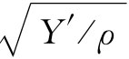 ，其中Y′为受约束情况下的“纵向模量”——或压强除以长度的相对变化，这恰好就是我们曾在式（38.20）中得到的F/A对Δl/l的比。因此，纵波的速率由下式给出：
只要σ在零与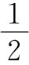 之间，则剪切模量μ就小于杨氏模量Y，而Y′比Y还要大，因而
μ＜Y＜Y′.
这意味着纵波比剪切波传播得更快。一种用来量度物质弹性常数的最精密方法，就是测量该材料的密度和这两种波的速率。从这种数据我们就能得到Y和σ。顺便说说，通过对发自一次地震的那两种波到达时间差的测量，一位地震学家——甚至仅从一个站所收到的信号——就能够估计出振源的距离。